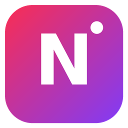

NOVA
Canlı
Yeni
Aç
Kaydet
Ayarlar
Kısayollar
Lisans
Hakkında
1080p30
0 fps
0 ms
00:00:00
GÜNCELLEME
FOTO
ÇIKIŞ
KAYIT
YAYIN
ÖNİZLEME
—
KES
OTOMATİK
Geçiş (Fade)
AlfaGeçiş (AlphaFade)
Siyaha Geç
Beyaza Geç
Silme (Wipe)
Kaydır
İt (Push)
Yakınlaş
Daire
T
STINGER
(sağ tık: ayarla)
FTB
OVERLAY
PROGRAM
—
CANLI
KAYNAKLAR
+ Kaynak Ekle
Tıkla: Önizleme • Çift tıkla: Ayarlar
SES MİKSERİ
Kulaklık